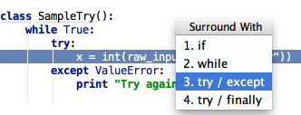

When you want to catch exceptions thrown by some code fragment, select it in the editor, press &shortcut:SurroundWith; (Code | Surround With) and choose try/except. This will automatically generate the except clause.
